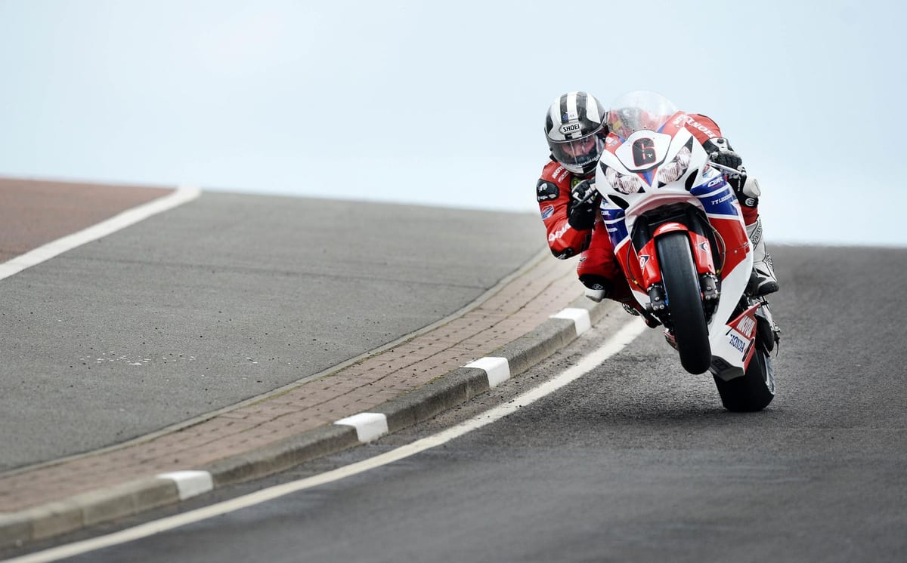

Upcoming
Health in Motorsport
Medical lessons from the Isle of Man TT racing.
Motorsport gives a unique opportunity to learn about the hyper-acute phase of injury and to improve treatment. Gareth has been TT medical director for many years, as well as being one of the lead clinicians with the London HEMS service.